Обо мне
CRM-маркетолог: воронки, рассылки, аналитика и ИИ-автоматизация в B2B/B2C. Стек — amoCRM, Roistat, Метрика, Excel/Power BI, Tilda, базовый HTML. Подробнее — на главной.
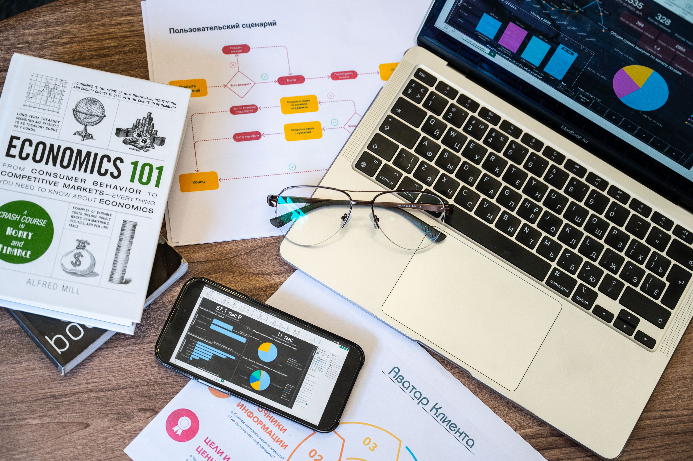
Case studies
Три проекта по CRM, рассылкам и ИИ. Названия компаний не указываю — фокус на задаче, роли и результате.
CRM-маркетолог: воронки, рассылки, аналитика и ИИ-автоматизация в B2B/B2C. Стек — amoCRM, Roistat, Метрика, Excel/Power BI, Tilda, базовый HTML. Подробнее — на главной.

Не хватало нормальной автоматизации рассылок в связке с amoCRM: сегменты, частоты и движение лидов по воронке приходилось держать вручную.
Собрал роботизацию на Google Таблицах: оттуда запускались скрипты в CRM. Скрипты и подключение к amoCRM делал разработчик по моему ТЗ. Каналы — WA (WABA), затем Telegram и MAX. Сегменты, частоты, задачи и перемещения по воронкам; тексты и ТЗ дизайнеру — мои, утверждение — главы продаж и маркетинга.
Бюджет на рассылки — от 30 тыс. ₽/мес.
Роль: идея — глава отдела + обсуждение со мной и разработчиком. Логику и таблицу вёл я; код/подключение — разработчик. Картинки до массового ИИ — дизайнеры.
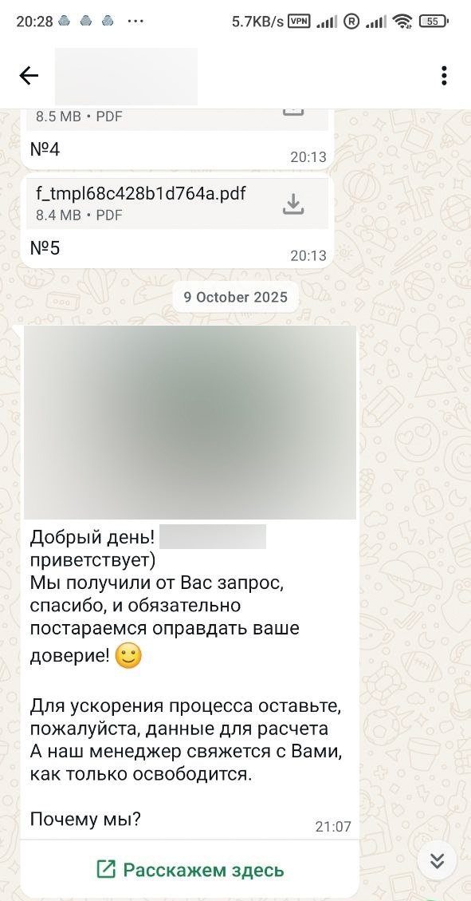
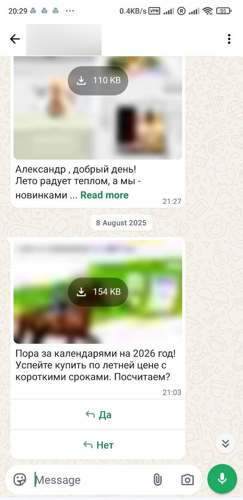
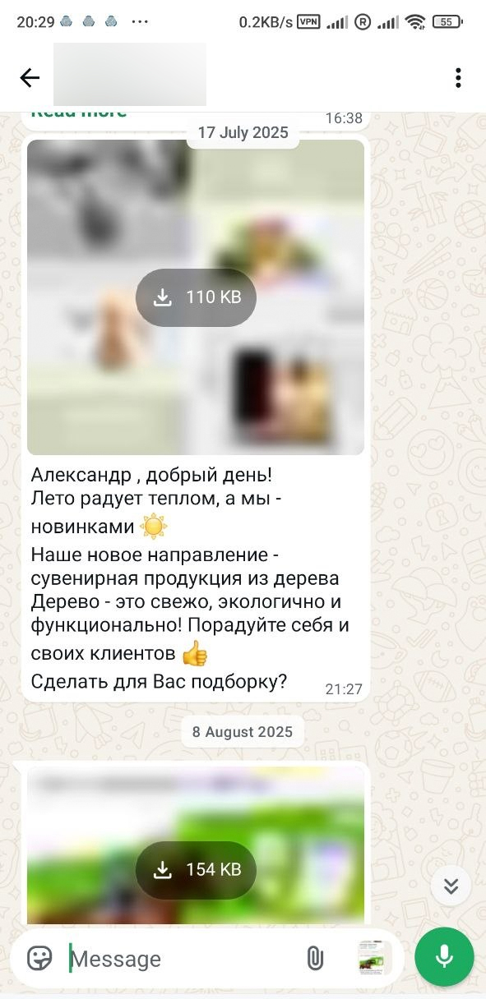
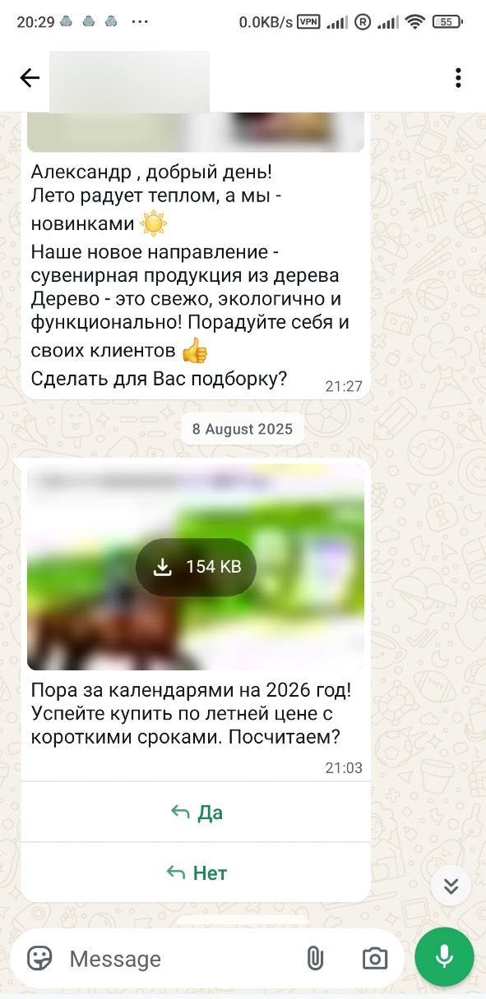
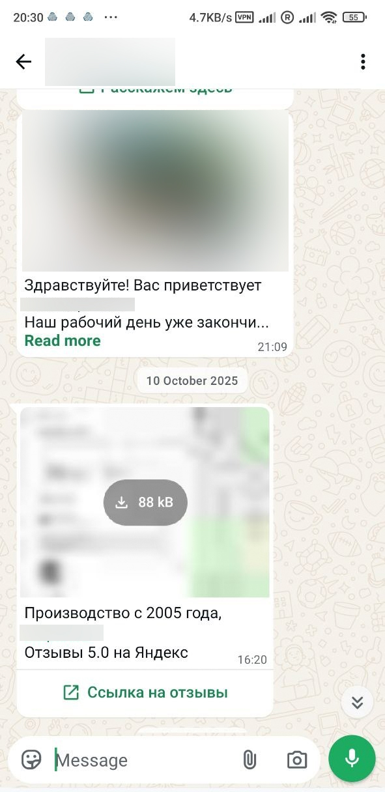
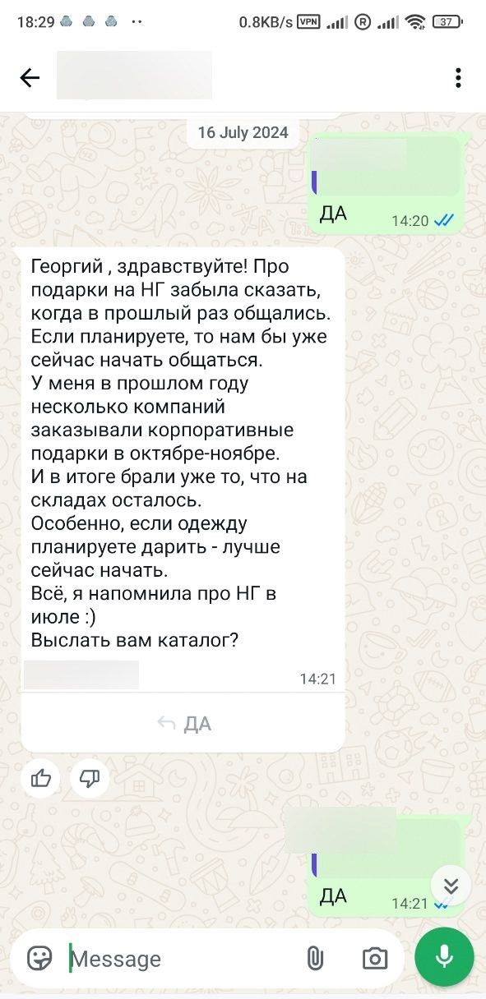
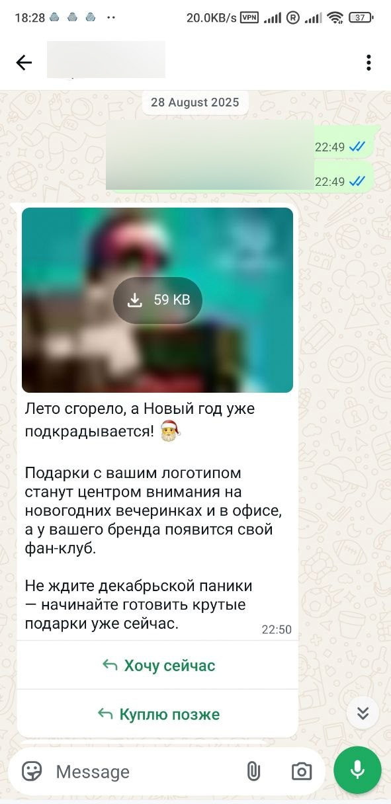
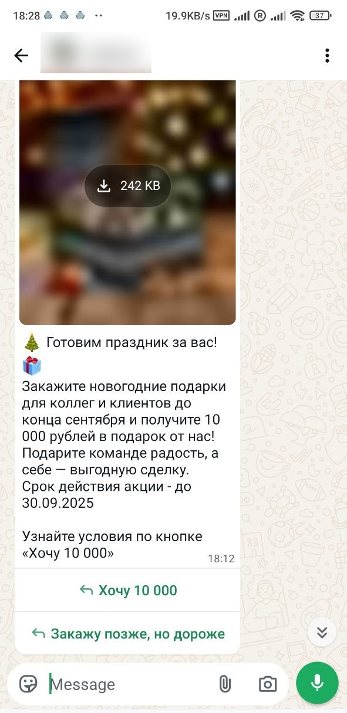
Скриншоты обезличены вручную: логотипы и название компании скрыты.
Высокая нагрузка на менеджеров: ночные заявки, заявки выходного дня и поток типовых вопросов о продуктах.
Собрал роботизацию CRM с ИИ-помощником: ответы, квалификация заявки и передача менеджеру. Подключение к CRM — осуществил разработчик по моему ТЗ; сценарии и логику автоматизации вёл я.
На старте были галлюцинации модели и введение клиентов в заблуждение — отдельно отрабатывал, пока ошибка не снизилась до ~1 из 28. Часы считал по сделкам несколько дней.
Роль: вся роботизация CRM↔ИИ — я; интеграция в CRM — разработчик по ТЗ.
Для SEO нужно было много статей, времени не хватало. Одна статья у копирайтера — около 1500 ₽; дорого при цели порядка 500 материалов.
Собрал оркестратор на ИИ-агентах end-to-end: текст, изображение и публикация. Всю систему сделал самостоятельно. Со стороны бизнеса участие было только в чате: человек утверждал макеты и говорил «делаем / не делаем» — без ручной сборки контента.
Система рассчитана на массовый выпуск: можно запускать сразу десятки материалов за один прогон (например, около 30 статей). Каналы: сайт, TenChat, Дзен, VK. Замера эффекта по трафику и заявкам не было — в кейсе только себестоимость и факт запуска конвейера.
Роль: end-to-end — самостоятельно.
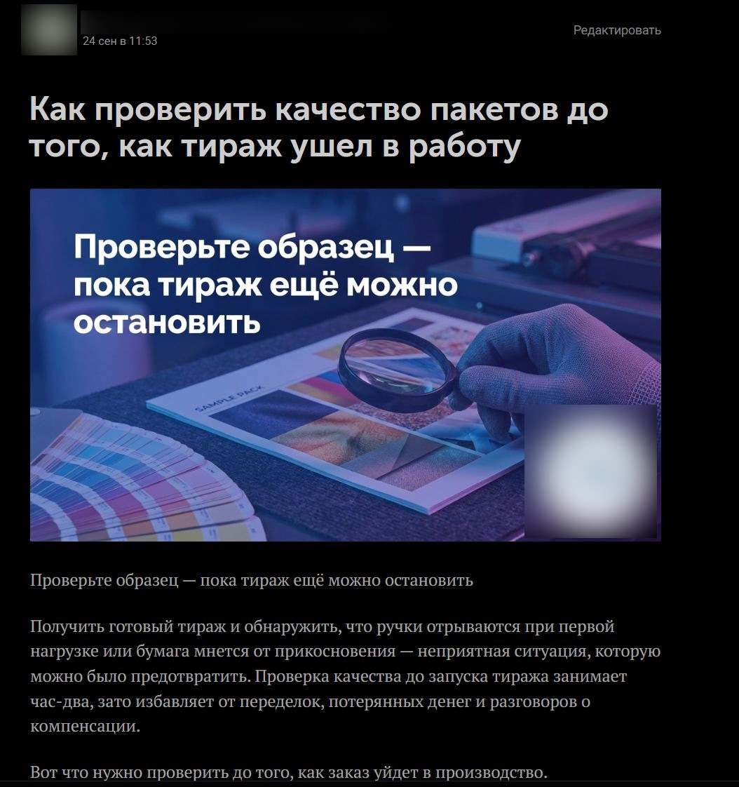
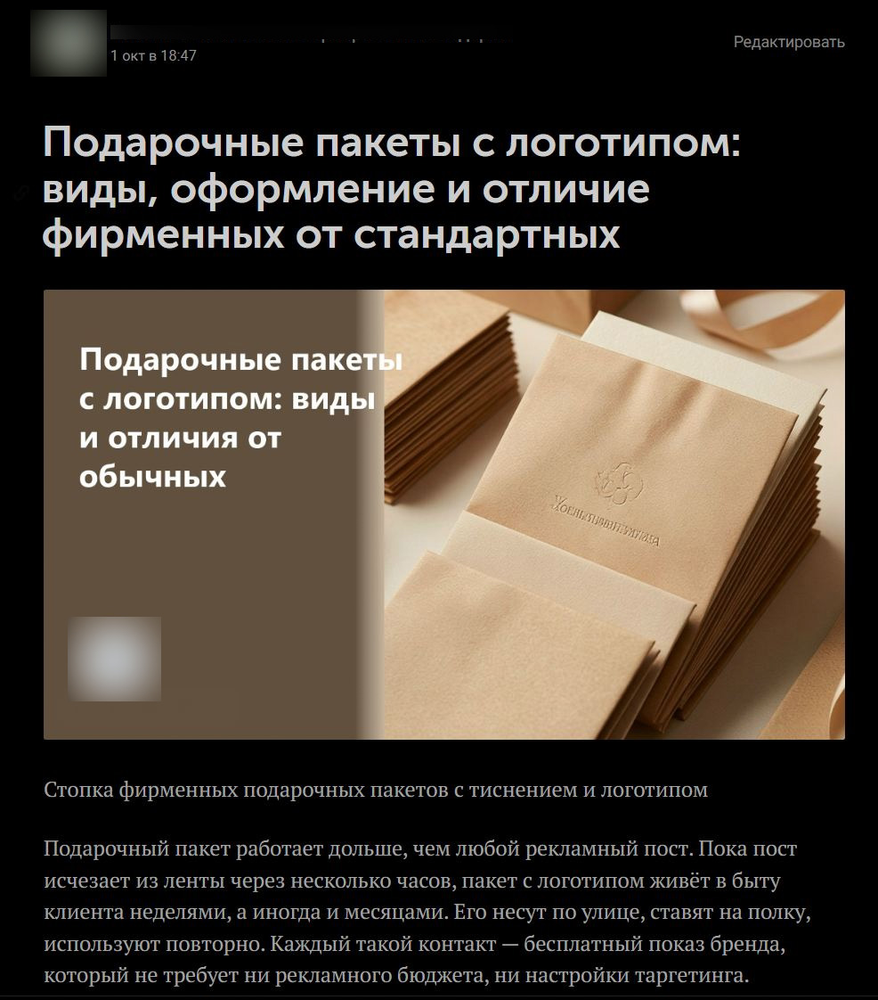
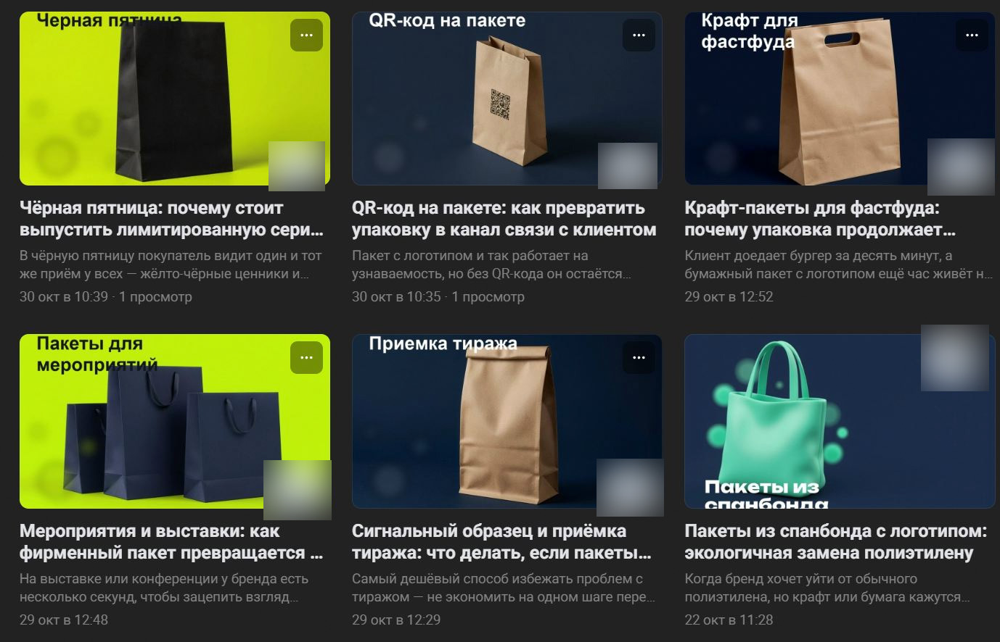
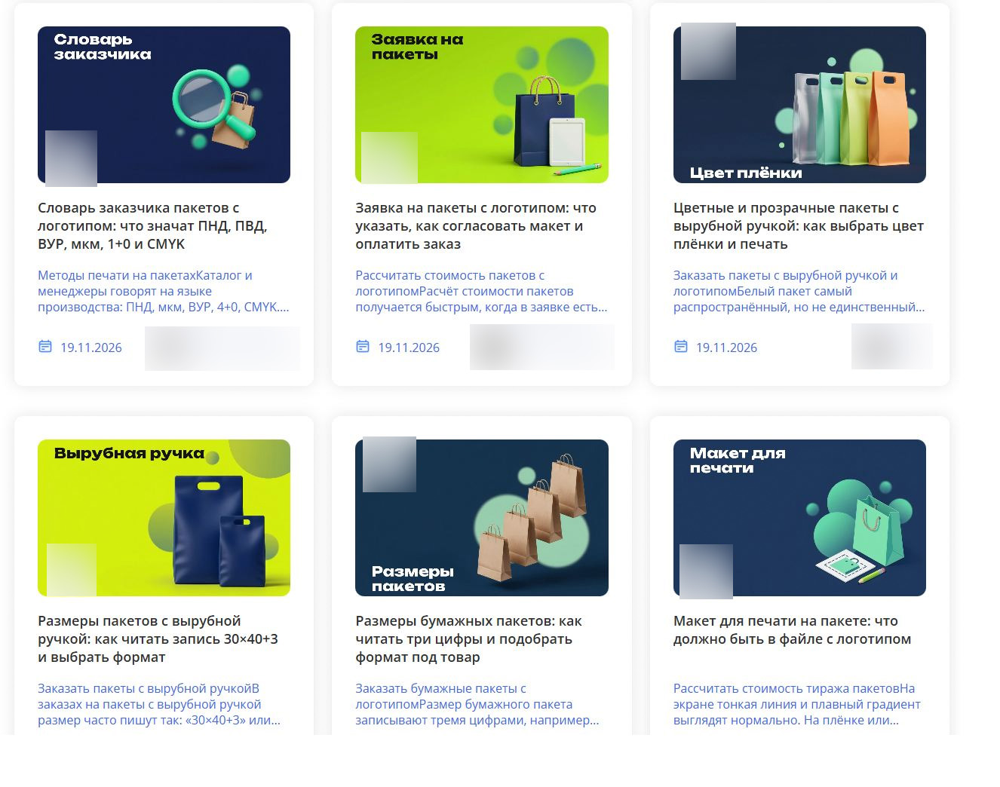
Логотипы, название компании и имена авторов скрыты вручную.
Напишите в Telegram — разберём, что можно автоматизировать.